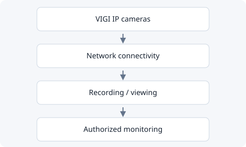

Physical security / Implementation
IP CCTV Installation
Installation of TP-Link VIGI IP CCTV for business video surveillance.
Business context
The project covers installation of a TP-Link VIGI CCTV solution to support physical security and visibility.
Implementation scope
Installed TP-Link VIGI CCTV equipment. Camera models, recorder configuration and site coverage are not documented.
Conceptual architecture

Illustrative workflow only; not a verified production topology.
Business value
Video surveillance can support premises monitoring and incident review. No measured outcomes are claimed.
Camera count, camera models, NVR or recording platform, retention period and deployment locations remain unconfirmed.
Technical documentation ↗